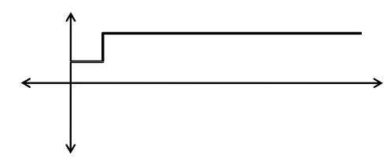
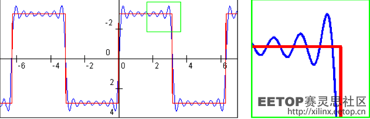
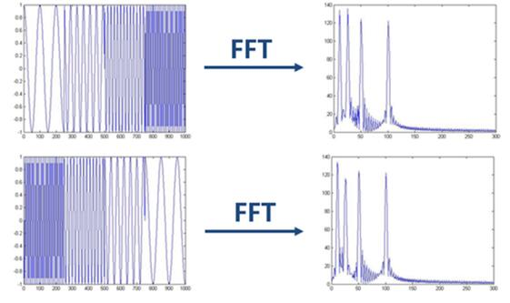
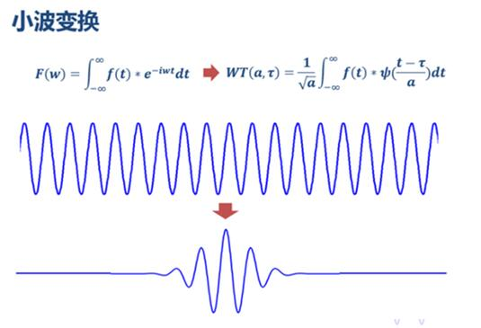
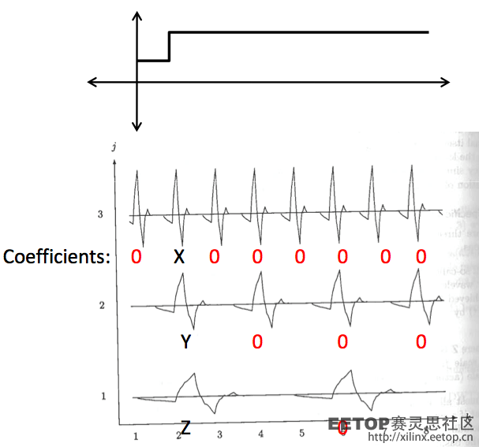
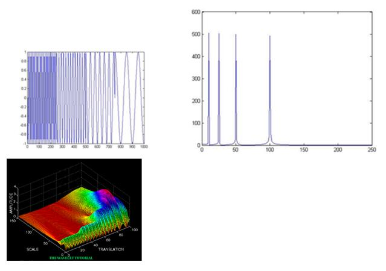
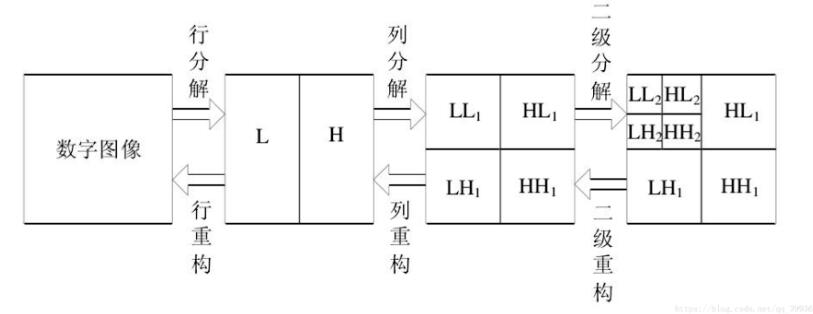
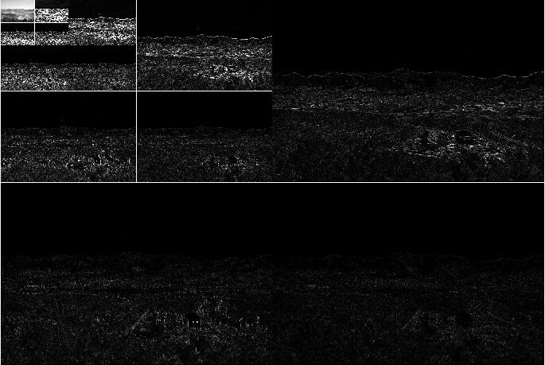

小波变换
最近在数字图像处理课上学习了关于小波变换的一些知识，不过对于其中的很多地方不是十分理解，所以也是去查看了很多人的blog，所以在这里算是做一个总结归纳吧，并且也整理一下自己的理解，也算是自己比较用心地一篇整理吧~
变换和傅里叶变换
在图像处理中，最基本的就是直接对图像的二维数据进行操作，比较神奇的就是卷积操作，能够完成许多图像处理操作，不过这种操作方式有很明显的一些不足之处。所以也是利用很多数学方法来改进图像处理方式，其中包括将图像处理从空间域变换到频率域去进行操作。
在变换的具体实现原理中，有很多线性代数的知识，比较主要的就是要理解何为线性独立的向量集basis，而在这个空间中的其他任何向量都可以用这个向量集中的向量来表示。所以说对于这种basis的选择便格外重要，因为选择的basis的特点便决定了可以对图像进行何种类型的操作。
说到这里，就可以解释一下傅里叶变换了，在傅里叶变换中，使用的是一系列三角函数来拟合出任何波形！这里看到一个大佬写的一篇关于傅里叶变换的blog，感觉写的贼棒！链接
而对于一幅图像我们也可以对其进行傅里叶变换，当我们对一副图像进行完傅里叶变换之后，便能够很直接的得到图像的主要变换部分和次要变换部分，即高频信息和低频信息。然后我们可以直接在matlab中的到一幅图像的频谱图，在频谱图像中能够更加直观的看出这一整幅图像中的高频部分和低频部分的比例关系。所以说在频率域上，我们能够很直接的对图像的高频信息和低频信息进行操作，比如去除椒盐噪声等。
小波变换
可以这样理解小波变换和傅里叶变换的关系吧，在傅里叶变换中，使用的是正弦波，，，不过正弦波是可以无限延申的，这样的特性带了好处的同时也有一定的局限性，比如在处理下面这种突变信号的时候：

使用三角函数的正弦波去拟合的话，则需要使用许多的三角函数去拟合这样一个简单的突变信号。

同时在使用傅里叶变换的时候，可以很直接的得到频率信息，但是却不能够得到对应图像中的时频信息，即某一段高频具体出现在图像中的何处位置，如下：

而对于小波变换，则不会存在这样的情况，所谓小波，就是一种能量十分集中的波形，就是说他并不是无限拓展的，而是集中在一定的区域内。

而这样的形式便能够很好的处理这种突变的信号。小波做的改变就在于，将无限长的三角函数基换成了有限长的会衰减的小波基。在小波变换中，有两个变量：其中一个为尺度变量，用来控制小波的伸缩，一个变量为平移变量，用来控制小波函数的平移距离。而这样也就解决了上面所说的傅里叶变换无法得到时频信息的问题，因为通过平移变量可以直到某一频率信息是对应在时域的具体位置。
同时对于突变信号的处理也能很好的解决：

通过傅里叶变换，我们进能够得到一副频谱图，没有时域信息，但通过小波变换，我们不仅是可以得到频谱图，更是可以得到一副时频谱！

除此之外，因为傅里叶变换的基是确定的，即正弦波，而小波变换中的基并不是确定的，所以会更加灵活，对于不同的信息进行处理的时候，也可以去选择专门针对这种信号处理的基波。总结来说，傅立叶变换适合周期性的，统计特性不随时间变化的信号; 而小波变换则适用于大部分信号，尤其是瞬时信号。它针对绝大部分信号的压缩，去噪，检测效果都特别好。
这里再附上一篇深入讲解小波变换的blog，有很多数学推导了，也更加深入。链接
图像二维快速小波变换
在数字图像处理实验中，使用小波变换对图像进行处理，这里总结一下大概处理思路：
- 对图像在水平方向上进行滤波处理，得到高频信息部分H和低频信息部分L。
- 然后再对图像的每一列进行滤波处理，这样就在原有信息的基础上，得到了四幅图像，分别是：HH，HL，LH，LL。
- 如果是对图像进行多阶的小波变换，那么就对LL部分重复进行上述操作即可。
在重构过程中，首先对变换结果的每一列进行以为离散小波逆变换，再对变换所得数据的每一行进行一维离散小波逆变换，即可获得重构图像。（如果是多阶的小波变换，那么就需要进行多次的重构）

通过这样的方式可以分理处高频和低频信息，并且得到对应的时域信息，所以更为直观，也更方便操作。
下面给出实验的matlab代码（其中用的函数，很多能直接从网上找到，我就不再放上来了），以及实验结果：
1 | f=rgb2gray(imread('laoshan.jpg')); |
原始图像:
快速小波变换后的时频信息：

重构后的图像：